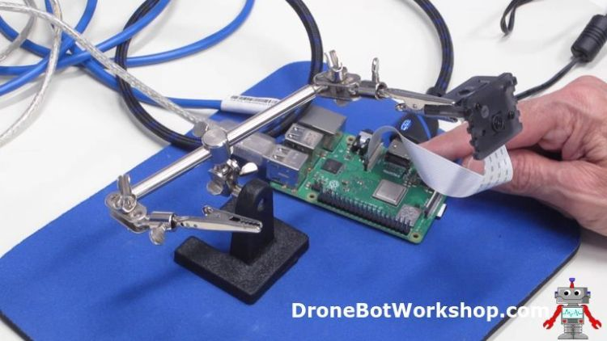

Introduction
Surveillance cameras are everywhere these days, or so it seems. You’ll find them everywhere – protecting businesses and property, guarding residences or keeping an eye on children and their babysitters.
The availability of low-cost camera modules makes a surveillance camera an excellent project. While you can certainly pick up a web-connected camera at your local electronics store there is something about building one yourself that is intriguing. You can customize it to suit your needs perfectly and perhaps conceal it in a spot where only you know about it.
Today we will build a surveillance camera that can be used by itself or in tandem with other cameras. This versatile project will have a number of advanced features like motion detection, the ability to save movies and pictures and a web-based interface that will allow you to vide the camera(s) on your desktop computer, tablet or mobile phone.
If this sounds like a complex and expensive project then you’ll be surprised to hear that it isn’t. In fact, this is a project that just about anyone can put together without any special skills required. Thanks to an open source product called motionEyeOS, along with a Raspberry Pi, you can put together a custom remote camera that can become the heart of a very sophisticated security system.
And all of the “heavy lifting” has been done for you, so no programming is required!
motionEyeOS
As I just mentioned motionEyeOS is an open source product that can convert any Raspberry Pi (and many other single board computers) into a sophisticated network-attached camera. The code itself is available on GitHub.
motionEyeOS is packaged as an image file that can be burned to a microSD card and then inserted into a Raspberry Pi. It runs entirely unattended, no keyboard, mouse or monitor is required.
The software has the following features:
- Very easy installation and setup.
- Has a web-based, mobile/tablet-friendly user interface that can be customized in many ways.
- Uses both the Raspberry PI camera module as well as several USB cameras.
- Can use multiple cameras on the same Raspberry Pi.
- Also has support for IP (network) cameras.
- Has motion detection with email notifications.
- Can be set up with a schedule.
- Uses JPEG files for still images.
- Several file formats available for movies.
- Can record time-lapse movies.
- connects to your local network using ethernet or wifi.
- Store images and videos SD card, USB drive or network share.
- Store images and videos on cloud storage services (Google Drive, Dropbox).
- media files are visible in the local network as SMB shares.
- media files can also be accessed through the built-in FTP server or SFTP server.
It’s a pretty impressive set of features if I do say so myself!
motionEye
motionEyeOs is actually an amalgamation of a number of other open source projects:
- Buildroot – Buildroot is a tool that can be used to create embedded Linux systems. It supports a number of different processors and single board computers.
- Motion – Motion is an open source program that monitors video signals and detects movement. It can be used with several types of video cameras and can also work with movie files, allowing you to analyze recorded video.
- motionEye – motionEye is the web-based frontend for Motion. It is written in Python.
You can actually customize your camera system even further by using the three software projects and compiling your own build. However, for most of us, motionEtyeOS provides a much simpler method of getting up and running.
Getting Started with motionEyeOS
All you really need to get started with motionEyeOS is a Raspberry PI, a micro SD card and a Raspberry Pi or supported USB Camera.
In our project we will be using a Raspberry Pi Camera. I’ll show you how to hook up the camera and use it with both a Raspberry Pi 3B+ and a Raspberry Pi Zero W. If you have another model of Raspberry Pi it will also work, you’ll just need to be sure to grab the correct image file for your board.
You can run your motionEyeOS camera system on your local area network using either an ethernet connection or WiFi. I’ll show you how to do it both ways.
You can also use one of several Raspberry Pi cameras. Let’s take a look at some of them now.
Raspberry Pi Camera
One of the features of the first Raspberry Pi Model A was that you could attach a camera board directly to the microcomputer. The camera connects using a 15-pin CSI connector and a flat ribbon cable.
All Raspberry Pi models have included the camera connector with the exception of the original Raspberry Pi Zero version 1.2. There simply was no space to put the connector on the tiny circuit board! It became a “most requested” feature and with the release of version 1.3 of the Pi Zero a miniature CSI connector was included. This connector is also found on the Raspberry Pi Zero W and Zero WH models.
Raspberry Pi Camera Models
The original Raspberry Pi Version 1 camera was released in 2013. It had the following specifications:
- Sensor – OmniVision OV5647
- Still resolution – 5 megapixels
- Sensor resolution – 2592 × 1944 pixels
- Sensor image area – 3.76 × 2.74 mm
- Focal length – 3.60 mm
The Version 2 camera was released in 2016. Its specifications are as follows:
- Sensor – Sony IMX219
- Still resolution – 8 megapixels
- Sensor resolution – 23280 × 2464 pixels
- Sensor image area – 3.68 x 2.76 mm
- Focal length – 3.04 mm
Both cameras are available in two versions, a standard version with an infrared filter and the “NoIR” version without the IR filter for “see in the dark” applications.
There are also many Raspberry Pi camera clones available, most of them use the OmniVision OV5647 sensor used in the original V1 camera.
Raspberry Pi Camera CSI-2 Connector
With the exception of the original Raspberry Pi Zero board, all Pi models include a Camera Serial Interface or CSI connector. This is a 15-pin ZIF or Zero Insertion Force connector that accommodates the ribbon or film cable running from the camera.
The CSI-2 bus is a high bandwidth bus that sends data on a pair of balanced data lines. The use of a balanced connection makes it possible to run a reasonably long unshielded cable without any significant degradation of the signal. It is possible to achieve bandwidths of 2 Gb on the Raspberry Pi implementation of the CSI bus. The bus also carries clock and I2C data as well.
On most Raspberry Pi boards a standard ZIF 15 socket is used. On the Raspberry Pi Zero models, however, the connector has been “shrunk” to accommodate the smaller printed circuit board used in these microcontrollers.
Using a Camera with the Raspberry Pi Zero
As the Raspberry Pi Zero and Zero W use a smaller ZIF connector they require a correspondingly smaller cable to mate with. You can get special cables or adapters to use with these Raspberry Pi boards.
There are also third-party cameras made exclusively for the Zero series, these camera modules already have the correct connector.
On any model of Raspberry Pi you need to ensure that you have the cable inserted the right way around, there is no key or notch on the cable so it will fit in either direction. The conductors are on one side of the cable and a quick look at the connector om the Raspberry Pi will make it pretty clear as to which side of the ZIF socket has the mating contacts.
If you do happen to plug the cable in backward it isn’t really a problem, as the cable only has conductors on one side you can’t really hurt anything except perhaps your own pride! Of course, the camera will only work with the cable inserted correctly.
Testing your camera
This is an optional step but it’s not a bad idea to find out if everything is working properly before you install motionEyeOS.
To give your camera a test you’ll use the Raspbian operating system. This is the default operating system used with the Raspberry Pi. If you have been using your Raspberry Pi for something else you likely already have Raspbian on a micro SD card installed on your board.
If you don’t already have a micro SD with Raspbian then you’ll need to get it from the official Raspberry Pi Website. Note that you will want to grab the image for Raspbian and not “NOOBS”, which is a boot loader that allows you to choose which OS to install on your Raspberry Pi.
The first time you boot up Raspbian it will ask you some questions about your locale, this is so it can set up your keyboard and network connections correctly. After you answer the questions you’ll need to reboot.
Once Raspbian is booted up you’ll be on the desktop. You will need to do some configuration first to enable the camera connection as it is disabled by default. Here is how you do it:
- Click on the “Raspberry” icon on the top left corner of the display. A menu will appear.
- Move your mouse down to the Preferences menu item. A sub-menu will appear to the right.
- Select Raspberry Pi Preferences at the bottom of the sub-menu. A tabbed dialog box will appear.
- Click on the Interfaces tab.
- Look for the Camera interface and enable it with the radio button.
- Click the OK button. A message will be displayed informing you that you’ll need to reboot for the changes to take effect.
- Reboot the Raspberry Pi.
Now that the camera interface has been enabled you can give the camera a test using the command line.
Open a terminal window by clicking the icon at the top of the display. Once the window is displayed type the following at the command prompt:
raspistill -v -o test.jpg
If all is working you’ll see a video preview from your camera for about five seconds. It will then take a picture and save it as test.jpg in your home directory.
You can now close the terminal window and open the file manager (the icon to the left of the terminal icon). As the file manager opes by default in the home directory you should see a test.jpg file there. Click on it and the image viewer will open up displaying the picture you just took with our camera.
You have now verified that your camera is working. If it doesn’t work power down the Raspberry Pi and recheck the cable connection on both the Pi and camera module ends, in particular make sure that the cable is seated correctly in the ZIF connector and that the conductors are facing in the correct direction.
With a working camera you’re now ready to work with motionEyeOS.
Getting motionEyeOS
So now that we’ve discussed the motionEyeOS software and Raspberry Pi cameras it’s time to put everything together and actually build a surveillance camera.
You are going to need the following parts:
- A Raspberry PI. While you can use any model of Raspberry Pi I’m going to show you how to put the system together with both a Raspberry Pi 3B+ and a Raspberry Pi Zero W.
- A Raspberry Pi Camera. Actually, you can also use a USB camera but not all USB cameras are compatible with motionEyeOS. I would recommend that you start with a Raspberry Pi Camera, any model will work.
- A blank micro SD card to hold motionEyeOS.
- A USB power supply for the unit. It should be rated at a minimum of 1.5 amps, preferably 2 amps or more.
There are some optional pieces you might want to have:
- An Ethernet cable, assuming you are planning to use a wired connection and not a WiFi connection. This kind of depends upon what model of Raspberry Pi you are using, a Zero W (or WH) doesn’t have an ethernet RJ45 connection whereas a Raspberry Pi 2 only has a wired connection. The Raspberry Pi 3B+ has both.
- An HDMI video monitor and cable. Again this is not necessary but it makes observing the boot process and getting the initial IP address a lot easier. If you are using a Raspberry Pi Zero W you’ll need an adapter to convert the HDMI connection to a standard size.

In addition, you’ll probably want some sort of enclosure for your camera, although I just built a couple on the workbench without any enclosures. This is where your imagination and creativity get a chance to go wild. You can build your unit into a standard camera case or disguise it inside a hollowed-out book, an old radio or a teddy bear!
I’ll leave that part up to you.
Getting the Right Build
motionEyeOS is available as an image file that can be burned onto a micro SD card that is then installed on the microcomputer you wish to use as a video server. There are several different microcomputers supported:
- Banana PI M1
- Nano Pi Neo2
- Orange Pi One
- Odroid C1/C1+
- Odroid C2
- Odroid XU4/XU4Q/HC1/HC2/MC1
- Pine A64/A64+
- Raspberry PI (A, B, A+, B+, Compute Module, Zero and Zero W models)
- Raspberry PI 2
- Raspberry PI 3 (B, B+, Compute Module 3)
Note that as of this writing there is no image specifically for the new Raspberry Pi 3A board, however, I suspect that the Raspberry Pi 3 image would work on this.
The first step is to get the latest version of the motionEyeOS image for your specific microcomputer board. Visit the motionEyeOS Supported Devices page and follow the link to the latest version for your board. It will be a ZIP file which you should download to your computer.
Burning the Image
Now that you have the image file (or files if you plan on using more than one model of Raspberry Pi as I did) you’ll need to burn it onto a micro SD card.
Note that simply unzipping it and copying it to a blank card will not work as the operating system need to create a separate boot sector. You actually need to use software that can extract the files and format the micro SD card properly.
For this task I use a program called Etcher. I’ve used it in previous articles and videos to create micro SDs for the Raspberry Pi. Etcher has some great features:
- It is a free open source product.
- It is available for Windows, Linux and Mac OS X.
- It is smart enough not to accidentally bun the files to an external hard drive!
- It is very easy to use.
You can get Etcher from their website and install it on your computer.
You’ll also need a method of inserting a micro SD card into your computer. Most modern computers have SD card slots, you can also buy an external USB SD card reader. You might need an adapter to adopt a micro SD card to a full-size SD card, this is usually included when you purchase a blank micro SD card.
Once you have Etcher (or another SD card burner) installed open it up and select the motionEyeOS ZIP file as your image. If you’re using Etcher it should automatically find the micro SD card but you can always manually select it.
Click the Flash button and burn the image to the card. The motionEyeOS image is pretty small so it won’t take very long to burn it. If you are using Etcher it will verify the image after it has been burned to ensure its integrity.
The next step is to remove the micro SD card from the computer and insert it in an unpowered Raspberry Pi board. I’ll go over the procedure now for both a Raspberry Pi 3B+ and a Raspberry Pi Zero W.
motionEyeOS & Raspberry Pi 3B+
I’m starting with a Raspberry Pi 3B+ as it supports a wired Ethernet connection, which is the easiest way of getting started with motionEyeOS. Of course, the Raspberry Pi 3B+ also supports WiFi but if possible you should run it first on a wired connection. You’ll see why in a moment.
Getting motionEyeOS to work on a Raspberry Pi 3B+ is as simple as hooking everything up and powering it on. You don’t need a keyboard and you really don’t need a video monitor, however, if you do have an HDMI monitor and cable it will make things a bit easier. It will also allow you to observe the operating system and motionEye loading and, most importantly, it is the easiest way to see what IP address your camera server has obtained so you can actually use it.
I used an HDMI monitor with my Raspberry Pi 3B+. I hooked an ethernet cable up to it, inserted the micro SD card with the proper image on it and then powered it up with a USB power supply.
When you boot motionEyeOS for the first time it will finish formatting your micro SD card and will then reboot. This is actually a function of the Raspbian operating system that it runs, it needs to determine the size of the micro SD card and create a proper working partition.
Upon rebooting you’ll observe (if you have a video monitor hooked up) a number of modules loading. After that, the software will try and establish a network connection.
This is the part you want to pay attention to – it stays on the screen so don’t worry about missing it. When a network connection is established it will use DHCP to request and then obtain an IP address. The IP address is the key to making this all work.
Make note of the IP address and then head over to a computer or tablet that is connected to the network.
Viewing your Camera
The IP address you get will have a format like 192.168.1.101/24 (your address will likely be different but will have a similar format).
Open a web browser on the computer or device that you want to view your camera on. In your browsers’ address bar type in the IP address without the “/24” portion (i.e. 192.168.1.101).
If all is working you’ll be greeted by the motionEyeOS screen and an image from your camera!
The image will be streamed at a relatively low rate, you’ll be able to change that later if you want to although most surveillance systems don’t stream at a high rate.
When you first log into the motionEyeOS camera you’ll be in User mode. If you click on the Settings icon on the top left corner of the display you’ll only have options for arranging how multiple cameras are displayed on your screen, which of course is of no use when you only have one camera.
In order to configure the camera settings you’ll need to log in as an Administrator. To do that click on the User Icon, which is the icon shaped like a person silhouette right next to the Settings icon.
After clicking on the Users icon you get a login box. By default, the username and password are both “admin”. Obviously you’ll want to change that, I’ll show you how to do that in a moment.
Once you have logged in as an administrator you can open the Settings again by clicking on the icon. This time you’ll see a lot more options. I’ll cover those options very soon but first I want to set a second camera up, this time using a Raspberry Pi Zero W.
motionEyeOS & Raspberry Pi Zero W
The Raspberry Pi Zero W is a remarkable little microcomputer when you consider its 10-dollar price tag. While that is twice the price of a plain Raspberry Pi Zero it gives you the additional features of WiFi and Bluetooth connectivity.
We will be using motionEyeOS on a Raspberry Pi Zero W to create a wireless remote camera using the WiFi connection. The instructions for doing this also apply to any other WiFi capable Raspberry Pi, including the Pi 3B+ that we just used.
Using WiFi with motionEyeOS presents one challenge, sort of a “chicken or egg” type of problem. If you recall how the Ethernet-connected Raspberry Pi booted up it established a network connection and then used DHCP to request an IP address. But with WiFi establishing a network connection requires one extra step.
If you want to see the problem in action then set up a Raspberry Pi Zero W with a camera and the correct image on a micro SD card, along with a video monitor to look at what is happening during boot up. When the system first boots up it will act just like the Raspberry Pi 3B+ did – it will format the micro SD partition, reboot and then start loading modules.
The problem arises when it goes to establish a network connection. It is looking for a wired connection but as none exists the boot process will fail. Which makes sense of course.
By the way, if you do decide to watch the Pi Zero W fail then you’ve ruined your chance at making it work. You’ll have no choice but to flash the micro SD card again. The procedure I’m about to show you works on the initial boot and must be done on a freshly burned micro SD card.
Creating a WiFi Preconfiguration file
If you think about it the bootup process really can’t start looking for a WiFi signal to establish a connection. Consider what you do when you first bring a brand new device home and want to attach it to your wireless network.
- First, you open the WiFi configuration utility and view all of the WiFi networks available. If you live close to your neighbors you likely have a few of them.
- Next, you select the network that you want to connect to.
- Finally, you need to provide a passcode to authenticate your device on the network.
You generally only need to do this once as your device is usually set to remember the login credentials. But without doing it you can’t use the WiFi network.
The motionEyeOS server has the same requirements. And the display you look at on your web browser does indeed have a place to enter your WiFi credentials.
But you can’t get that screen as the Raspberry Pi can’t connect to the network to give it to you! This is the “chicken or egg” scenario I alluded to earlier.
The solution to this is to create a special file with your network credentials and then place it on the micro SD card BEFORE you boot up for the first time. This is called a “WiFi preconfiguration file”.
The WiFi preconfiguration file is a text file in a specific format named “wpa_supplicant.conf”. The file contains the SSID (name) of the WiFi network you want to attach to as well as the passkey (password) needed to authenticate on the network. The format of the file is shown below.
I have created a template for this file that you can download and modify with your own network credentials.
Once you have created the file it needs to be placed in the boot sector of freshly created motionEyeOS micro SD card. The card is then inserted into the Raspberry Pi Zero W and you then power it up.
During the initial boot motionEyeOS looks for the wpa_supplicant.conf file. If it finds it then it is copied to another location and is used every time the device boots up. As long as the information in the file is valid it will attach to the WiFi network instead of looking for a wired network.
Once the connection to the WiFi network is made then the device behaves identically to the wired Raspberry Pi 3B+ we looked at earlier.
Finding the Cameras on the Network
When I set up both of my Raspberry Pi cameras I attached a video monitor to the boards so I could observe the boot process and, most importantly, get the IP address assigned to the camera.
But what if you can’t (or just don’t want to) use a video monitor? How do you determine the IP address of the motionEyeOS camera server in order to view and control it with a web browser?
The solution is to scan your network and look for the camera server(s). There are a number of ways of doing this and with some operating systems you can even use the file manager. But a much easier method is to use an IP Port Scanner, a piece of software specifically designed for this purpose.
Angry IP Scanner
I’m not sure why the software is “Angry” but the Angry IP Scanner is a free, open-source product that runs on Windows, Linux or Mac OSX. It’s an ideal tool for determining the IP address of all of the devices connected to your local area network.
You can get a copy of the Angry IP Scanner here.
Once you have Angry IP Scanner installed on your computer open it up and press the Start button.
You’ll see the progress as the software scans your network. When it finds an attached device it will display its IP address and Hostname, as well as a few other parameters. The IP address and Hostname are the columns we are interested in.
Any motionEyeOS video servers detected by the port scanner will have a hostname beginning with “MEYE-”. For example, my Raspberry Pi 3B+ had a hostname of “MEYE-0B4D1F76”. The hostname is generated when motionEyeOS does its initial boot sequence and will be different for every motionEyeOS installation.
By looking for those unique hostnames you can quickly determine the IP address of all of your motionEyeOS cameras.
Using the motionEyeOS cameras
So now I’ll assume that you have one or more motionEyeOS cameras set up and have verified that they are working. If you start exploring on the web-based user interface while logged in as an administrator (username and password are both “admin” by default) you’ll notice that there are a lot of features and options.
Let’s spend some time examining these options so we can customize our surveillance system.
DHCP
When you booted up your camera(s) it/they were provided with an IP address. The method used to obtain the address is Dynamic Host Control Protocol or DHCP.
Every device that wants to connect to your network requires an IP (Internet Protocol) address. This address, along with some other parameters like a subnet mask and default gateway, allows your device to communicate correctly with the other devices on the network.
No two devices on the same network can have the same IP address, just as no two buildings on your street can have the same address.
There are two methods of configuring an IP address for a device:
- Manually configure the device with an IP address that you know is unused on your network.
- Use DHCP to have one assigned to you.
It would be pretty inconvenient to have to assign a unique IP address manually to all of your computers, tablets, phones and printers. So for these devices DHCP is a great system
DHCP works by having a device on your network called a DHCP Server. The DHCP Server has a pool of reserved IP addresses that it can use to hand out to new devices connecting to the network, just like it did when we booted up our motionEyeOS server.
In most home and business networks the DHCP Server is built into your router. It works like this:
- A new device joins the network and makes a request for an IP address. It includes its MAC (Media Access Control) address as part of the request to identify itself. Every network device on the planet has a unique MAC address.
- The DHCP Server gets the request and looks in its pool of addresses for an unused one. As long as one is available it makes note of the new devices MAC address and assigns the IP address from its pool to it. It also sets an expiry date or time to the address.
- The device requesting the IP address makes note of the address it has been assigned and uses it. It also makes note of the expiry date or time.
- As long as the device stays connected to the network and is powered on it will have the same IP address. When it sees that the expiry time is getting near it makes a “DHCP Renew” request to the DHCP Server. The Server renews the ”lease” on the address, meaning it sets the expiry date or time to be further in the future.
- If the device leaves the network (disconnected or powered down) and the lease time expires then it will go through the procedure all over again. There is no guarantee that it will get the same IP address.
I underlined that last point as it’s pretty important. If you power down or remove your motionEyeOS server from the network you may end up with a different IP address the next time you connect it or power it up.
This can get confusing as every time you do that you would need to determine the new IP address and set your web browser to the new address. With more than one camera it could be a nightmare!
Setting a Fixed IP Address
It would be a lot better if we could assign a fixed IP address to our motionEyeOS server. That way we would always be able to monitor it using the same address.
There are actually two ways to do this:
- Use a configuration file, similar to how we configured the Raspberry Pi Zero W to use a specific WiFi network.
- Use the motionEyeOS control panel and change the IP address to a fixed one.
I’m going to show you how to do it with the motionEyeOS control panel. If you would prefer to do it with a configuration file there are details on the motionEyeOS Wiki.
Before you use either method you’ll need to figure out what IP address you want to assign your motionEyeOS device to. You want an address that isn’t used by any other device on your network and that is outside of the DHCP pool.
The best way to determine what address to use is to examine your router configuration to see which addresses are reserved for DHCP. But if you don’t have access to the router configuration you can make an educated guess by observing the addresses using a port scanner like the Angry IP Scanner. You’ll notice that most of the devices on your network tend to be grouped in one range of addresses, this is likely your DHCP Range. Pick an address well below (or above) that range and you’ll likely be OK.
Once you have determined which address to use it’s time to configure your motionEyeOS server to use it instead of DHCP.
Start by logging into your motionEyeOS server as an administrator. Now open up the Settings menu (icon on the top left of the page).
Scroll down a bit until you come to the General Settings area. There is a slide switch for Advanced Settings, turn this on with your mouse. More options will appear, including a Network section.
Open the Network settings and look at the drop-down for IP Configuration. Right now it will be set to DHCP. Change this to Manual (Static IP).
You’ll get four new boxes displayed to enter your IP Address, Network Mask, Default Gateway and DNS Server. The only one you’ll need to concern yourself with is the IP Address.
Enter the fixed IP address that you wish to use. Then click the Apply button, the orange one at the top of the screen.
You will get a message saying that the motionEyeOS server will reboot.
As the server is rebooting you’ll lose the image from the camera. And now that the IP address has changed you will need to change the address in your browser bar to match it. Give the system a minute to reboot before you do that.
When the server reboots it will now be at the fixed IP address. And it will stay there even if you disconnect it or power it off.
I would recommend that you do that to all of the motionEyeOS servers you build.
And if you have more than one motionEyeOS server you’ll want to move on to the next section.
Viewing Multiple Cameras on one screen
Unless you live in a one-room apartment you’ll probably want to have more than one motionEyeOS video server, one for each room or area of interest. In the video accompanying this article I have put together two of them.
My two motionEyeOS servers each have their own fixed IP address. And right now I need to monitor each one in a separate browser tab or window. It would be much nicer to put them all onto the same screen so I could observe all of the cameras at once.
Naturally, there is a way to do this, you can display a number of cameras on the same screen and you can also administer them from the same screen as well.
There are a couple of methods of displaying multiple cameras, and you may use them both simultaneously.
- Connect a USB camera to the Raspberry PI in addition to the camera you have connected to the CSI connector. The second camera will automatically be displayed on the screen.
- Use one Raspberry Pi as a “Master server” and display its camera(s) as well as other motionEyeOS cameras.
- Use multiple motionEyeOS cameras and use one powerful Raspberry Pi as a “camera hub” to display them all.
The motionEyeOS Wiki has a number of potential configurations illustrated, along with advantages and disadvantages of each of them.
Let’s see how I would view my two motionEyeOS cameras on one page. I will be using the installation on the Raspberry Pi 3B+ as my Master server as it has much more computing “horsepower” than the Raspberry Pi Zero W.
Before you do any of this make sure to set all of your motionEyeOS camera servers to have a fixed IP address, as described in the previous section.
Now log into the Raspberry Pi that you want to use as the Master server. Now would be a good time to rename the camera, as by default it’s named “Camera1”. Just open the settings and scroll down to the Video Device section and change the Camera Name to something more descriptive (i.e.” Living Room”). Click Apply to save the change.
Now go to the top left of the settings panel, you’ll see a drop-down which will have the name of the current camera (Camera1 or whatever you just named it to). Drop down the menu and select “Add New Camera”.
The Add Camera dialog box will now display. Use the drop-down and select “Remote motionEye Camera” as the Camera Type. Note that you have several types to choose from so you can integrate IP cameras you may already own into your system.
In the URL field enter the IP address of the other motionEyeOS camera in URL format – i.e. http://192.168.1.81/. An easy way to get this address already formatted is to just copy it from the browser address bar, the ”http://” will be inserted for you.
Now enter the administrator password, which by default is “admin”. Once you do the Camera box should populate with the name of the remote camera, either “Camera1” or a custom name you have given it.
Finally hit OK. After a couple of seconds you should see the new camera displayed beside your existing one.
You can now administrate the camera on this screen as well. The drop-down on the top allows you to select either camera.
Saving Images and Movies
Having a surveillance camera is great but it would be impractical to have to watch it 24 hours per day, I’m sure you have better things to do. Fortunately that isn’t necessary, as motionEyeOS can capture images and movies that you can look at later.
You can choose whether to continually capture images and video or you can just capture them whenever motion is detected. The latter option can save a lot of storage space and can also make it much easier to find images and videos of events that may have occurred under your cameras watchful eye.
You can also choose where to save your recordings, by default they are stored on the micro SD card but you can also store them in a network file share location or even on cloud storage servers like Google Drive or Dropbox.
In the settings panel while logged in as an administrator scroll down to the sections for Still Images and Movies and expand them. Both sections have similar options.
First, you can set the template for the file names, by default they use the date including the time down to the second.
You can select the quality for both images and videos, higher quality recordings will take more storage space. I found the default settings to be satisfactory for my requirements.
For the movies you can also select the video format. For images you may enable Manual Snapshots, if you do a small “camera” icon will be displayed on each video screen to allow you to take an instant picture by clicking it.
The Capture Mode for both images and movies determines when things will get recorded. I set both of mine to Motion Triggered.
Finally, you may select how long to preserve the images and videos.
To view images and videos you’ll find icons on each video screen allowing you to bring up a dialog box that lists all of your recordings. You can then choose to view them directly, download them or delete them.
Motion Detection
Below the Image and Movie settings, you’ll find the settings for motion detection. These determine how sensitive the camera is to motion.
You may find that you need to adjust thresholds to prevent false triggering or to enable triggering in poorly lit environments. False triggering can be caused by things like curtains the flutter in the breeze or pets that wander into the viewing range. It can also be reduced by repositioning or refocusing the cameras.
By using one Raspberry Pi to combine the signals from all your motionEyeOS cameras you can administer everything from one screen and create a truly personalized surveillence system for your business or home.
Conclusion
It may seem unbelievable after reading over 6500 words but there is still a lot that I haven’t covered regarding motionEyeOS! It really has so many features that I could probably write a book on it.
You can use motionEyeOS to send you an email with an image or video attached when it spots something moving. You can use it to trigger an API and have some other event or device respond to a detected motion. And the developers of motionEye, which motionEyeOS is based upon, are constantly adding new features and creating new builds.
It really is a remarkable piece of software and its availability as an image file for a Raspberry Pi makes it very easy to use.
For additional information about the software your first stop should be the motionEyeOS Wiki on GitHub.
If you’ve made it this far thanks for hanging in there! Now go out and et up a few motionEyeOS cameras.
Resources
motionEyeOS Wiki – The definitive source for information on motionEyeOS
motionEye Wiki – The product upon which motionEyeOS is built upon. If you need a more advanced configuration you may install this under Raspbian.
Raspbian – The default operating system for the Raspberry Pi
Angry IP Scanner – An IP port scanner available for Windows, Linux and Mac OSX
Etcher – A great utility for burning images onto SD and micro SD cards. Available for Windows, Linux and Mac OSX.
Template for Static IP – My template to make your own wpa_supplicant.conf file.
I love your YouTube videos and I thought I’d try MotionEyeOS. I have a PI 3 with touchscreen LCD and one of those cameras with IR emitters on both sides. I’m only using one IR emitter because my power supply that’s supposedly 2.5A has a low voltage warning when both emitters are running. The camera works fine under Raspbian. I downloaded MotionEyeOS and used Etcher to write to the card but it gives a warning “It looks like this is not a bootable image”. If i continue then put the card in the PI, nothing happens. I even went back… Read more »
Hi Marv. That is a strange message indeed. I assume that the files you are downloading are arriving as”.img.xz” files (i.e. motioneyeos-raspberrypi3-20180627.img.xz) and that you aren’t extracting it but are just using it “as-is” with Etcher? Out of curiosity are you using Linux, Windows or Mac OSX? I usually use Etcher under Ubuntu Linux 16.04 but I’ve also used it with Windows 10, although the MotionEyeOS files I only used under Linux. I wouldn’t think it would make a difference but to be sure I’ll try it on Windows and on a Mac, just to see if that makes any… Read more »
thank you for posting the video, i have watched it several times. im using a mac (os 10.10) to download the *.img.xz files, and double clicking on the file does not do anything (unzip or tar), but from the terminal gunzip works.
in daylight condition the camera (https://www.amazon.com/gp/product/B07D8S6JRH/ref=oh_aui_detailpage_o03_s00?ie=UTF8&psc=1) with MotionEyesOS works great, but unfortunately under night condition the IR emitters are not on, does MotionEyesOS detect the lighting conditions and turn on the IR emitters or does this need to be done externally to the pi? thanks again for the video and the links to the instructions
v/r
mikey
Thank you for your video. I have a UVC analog to digital converter. It is a USB device connected to a cctv camera.
Does MotionEyeOS recognise this USB device ?
Can you do something about accessing a motioneye camera from the web outside your own network?
I have tried to follow instructions on the web, but failed.